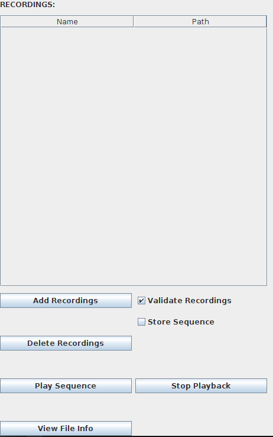
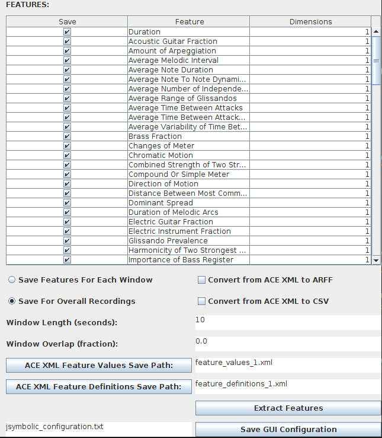

| Using the Graphical User Interface |
|---|
EXPLANATION OF THIS SECTION
This section explains how to use the jSymbolic GUI.
RUNNING THE JSYMBOLIC GUI
A file named "jSymbolic.jar" is included in the jSybmolic distribution. jSymbolic can be run simply by double clicking on this file.
The jSybmolic GUI can alternatively be run or by typing the following at a terminal prompt (after navigating to the directory holding the jSymbolic.jar file):
java -jar jSymbolic.jar
Running jSymbolic like this (or double clicking on the jSymbolic.jar file) will cause the GUI to be loaded set up with default settings, as defined by a configuration settings file in the same folder as the jSymbolic.jar file, and with the file name jSymbolicDefaultConfigs.txt. If no such file exists, or if it is not a valid jSymbolic configuration settings file, then the GUI is loaded with hard-coded default settings.
Users wishing to pre-load the GUI with alternative settings stored in any given configuration settings file they wish may enter the following at a terminal prompt (again, after navigating to the directory holding the jSymbolic.jar file:
java -jar jSymbolic.jar -configgui <ConfigurationFilePath>
More information on using jSymbolic's command line interface is available here.
OVERVIEW OF JSYMBOLIC'S GUI
The jSymbolic GUI consists of two primary panels:
THE RECORDING SELECTOR PANEL
MEI and MIDI recordings can be added and removed from the list of files to extract features from on this panel by clicking the Add Recordings and Delete Recordings buttons, respectively. If the Validate Recordings checkbox is checked, then the recordings will be validated immediately upon addition to this list in order to ensure that they are valid MEI and MIDI before feature extraction begins. It is highly recommended to leave this checkbox on. The Store Sequence checkbox causes MIDI sequences to be stored for all valid input files.
The Play Sequence button and Stop Playback buttons can be used to sonify MIDI and MEI files (the latter of which is converted to a MIDI file using jMei2Midi for playback).
The Fiew File Info button displays metadata for input files. It currently only displays file information for MIDI files.

Figure 1: The Recording Selector Panel.
THE FEATURE SELECTOR PANEL
The top section of the Feature Selector Panel allows the user to use checkboxes to select the features they would like to extract from the input files specified in the Recording Selector Panel. The Dimensions column of this table indicates the number of dimenions assocuated with each feature (multi-dimensional features are at the end of this list).
The Save Features For Each Window and Save For Overall Recordings radio buttons allow the user to choose whether input files should be broken into windows from which features will be extracted individually, or if only features for input files as a whole should be extracted. If the Save Features For Each Window option is selected, then the Window Length (seconds) text box must be used to specify the number of seconds each window should last, and the Window Overlap (fraction) text box must be used to specify the fractional overlap between consecutive windows. For example, for a window length value of 10 and an overlap value of 0.1, the windows will be from 0 sec to 10 sec, 9 sec to 19 sec, etc.
The Convert from ACE XML to ARFF checkbox allows the user to decide whether feature values should be saved in a WEKA ARFF file. Similarly, the Convert from ACE XML to CSV checkbox allows the user to decide whether feature values should be saved in a CSV text file. Features are also saved as ACE XML files, regardless of whether ARFF or CSV files are also generated.
The ACE XML Feature Values Save Path button allows the user to open a browse dialog box to choose the path to save the ACE XML feature values to. This path may also be written in the accompanying text box by hand. If ARFF or CSV files are set to be saved, they will be given the same file name, but with a .arff or .csv extension, respectively.
The ACE XML Feature Definitions Save Path button allows the user to open a browse dialog box to choose the path to save the ACE XML feature metadata to. This path may also be written in the accompanying text box by hand.
The Save GUI Configuration allows the user to save the settings currently displayed in the jSymbolic GUI as a configuration settings file to the path specified in the accompanying text box.
Finally, feature extraction is initiated by pressing the Extract Features button. Any invalid files will result in popup error message at the end of the processing. All valid files will still be processed and have features saved. If an MEI-specific feature (e.g. Number of Grace Notes) is set to be extracted, then it will only be extracted from MEI files (it will be ignored by other files, such as MIDI files).

Figure 2: The Feature Selector Panel.